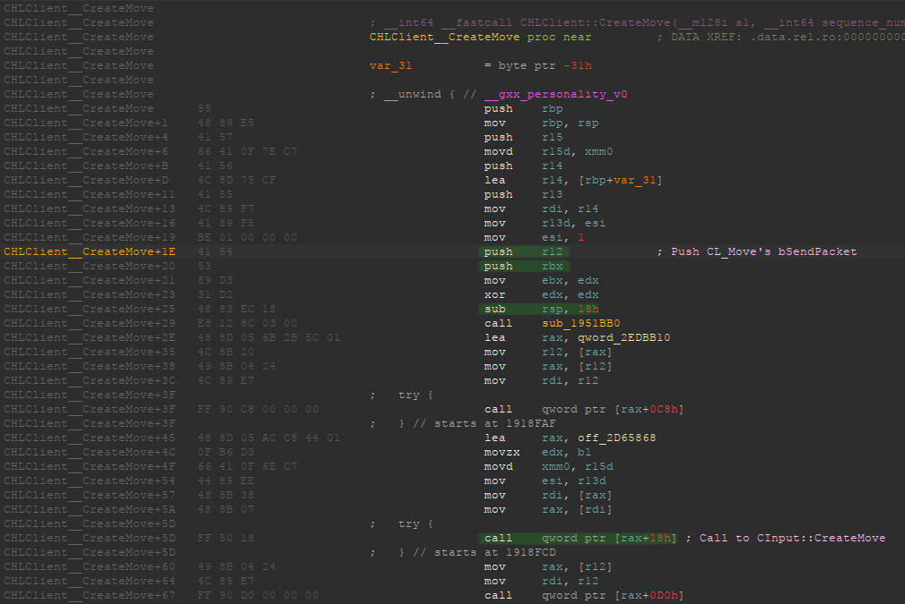

Reversing TF2's bSendPacket
Table of Contents
1. Introduction
Team Fortress 2 (TF2) is a 2007 multiplayer first-person shooter game developed and published by Valve Corporation (Wikipedia).
On Aug 6, 2023, I started working on a TF2 cheat for GNU/Linux, and in over 600 commits, I was pretty happy with the result.
However, on April 19, 2024 (just a few days before writing this), Valve released a 64-bit update. For windows, this just meant an extra architecture, but on GNU/Linux, they entirely removed the 32-bit binaries. I decided to archive the repository and continue developing the cheat privately.
One of the main reasons for this decision was that I wanted to avoid essentially releasing fixes for the cheat, that would get used by people who are just interested in copy-pasting a working cheat and selling it, or making bots. As I explained in the repository's README, I made this project because I enjoyed reversing the game in a platform with not much reference, and I enjoyed the low level aspect of essentially having to do all the "dirty work" of reversing the game and making everything work.
However, It is not fair to say that I was the only one involved, and obviously some people did help me greatly. I just want to quickly mention Lak3 for his time and help, and nepcat for his helpful PRs, and his interest in the project.
Now that this long introduction is finished, we can get to finding bSendPacket.
2. The problem
First, in case the reader is unfamiliar with game hacking in the source engine,
I need to briefly explain what bSendPacket is used for.
In the source engine, we run a lot of our hacks from the CreateMove hook (for
more information about hooking in general, see my Detour Hooking
entry). However, there is not just one CreateMove, and some people choose to
hook one over the other. In my case, I have always hooked
ClientModeShared::CreateMove.
Let's have a look at where this is called by looking at the leaked TF2 source.
- Our
ClientModeShared::CreateMovefunction is defined inclientmode_shared.cpp. As you can see, it calls anotherCreateMovefunction, but we don't care about that one. - This
ClientModeShared::CreateMovefunction is called fromCInput::CreateMove, defined inin_main.cpp. You can see it calls it from ag_pClientModeglobal pointer. - This
CInput::CreateMovefunction is called fromCHLClient::CreateMove, defined incdll_client_int.cpp. - Finally, this
CHLClient::CreateMovefunction is called fromCL_Move, defined incl_main.cpp.
So, in order, the calls would be the following:
CL_Move() -> CHLClient::CreateMove() -> CInput::CreateMove() -> ClientModeShared::CreateMove()
Okay, but why is this important? Let's have a look at this last function,
CL_Move. It defines a local variable called bSendPacket, which will later decide
if the current command should be sent or, on the other hand, choked. Being able
to control which packets are sent and which ones aren't is extremely useful for
us, so we need to find a way of changing its value.
As I said, this is a local variable, so we can't just treat it as a global and
get a pointer to it. This variable is declared within the stack frame of
CL_Move, and only exists throughout its life cycle (this will be explained
bellow in more detail). We will need to find a way of somehow tricking CL_Move
into thinking that this variable has the value we want it to have, and ideally
do that from ClientModeShared::CreateMove.
3. The old solution
When I started developing my cheat for the 32-bit game, I came across an (almost) valid solution.
Since CL_Move only sets bSendPacket to true on once place, we could just
overwrite this constant in memory, so that it gets initialized to true only
whenever we want.
Let's look at the old 32-bit binary from IDA. If we open engine.so, where
CL_Move is located, we can search for the function by looking for the strings
that it uses, and jumping to their xrefs. Then, we can hit the almighty F5 key
to decompile the function.

I renamed the variables on the decompiler window (right split), but it should be
pretty clear what does what by comparing it with the source. As we can see by
the instruction bytes on the left split (Options > General > Number of opcode
bytes), it's setting esi (bSendPacket) to true by moving the immediate value
0x00000001 (note that this is little endian).
We could get a pointer to where those 01 00 00 00 bytes are in memory, and then
cast it to a bool*. To do this, we could, for example, look for a signature in
the game's memory (see my Signature Scanning in C entry). Once we have this
pointer, we could use it for controlling the packet flow, right? Not really.
3.1. Flaws with this approach
This approach has a couple of flaws. The first one is that we can't force it to true, just to false. If we leave it as it was (true), the game might set it to false later in the function. This is not a problem in our case, but it's something to keep in mind.
Another problem is that, if we look at the position of the value we are changing
and the position where CL_Move calls CHLClient::CreateMove, we can see that we
are overwriting the bytes of an instruction that has already been executed in
this tick. Therefore, our change will affect the next tick. This is a problem
that I didn't realize until the game updated to 64-bits, and it has probably
caused me a lot of unusual trouble before.
4. The new problem
Let's have a look at CL_Move after the 64-bit update. Again, we search for
strings and check the xrefs.
We can see that it's moving moving ebx (v3) into r12d (bSendPacket), but how do
we know that it's setting it to true? Let's scroll up a bit.
As you can see, it's moving the value returned by sub_5376C0 (eax) into ebx. If
the test al, al is zero (function returned false), it jumps to loc_47A007, which
just returns.
The fact that it's moving true from a register instead of an immediate value is
a slight problem, since we can't just patch some 01 00 00 00 bytes. The opcode
bytes for the mov instruction are now 41 89 DC, but we could still patch it.
If we look at the general purpose registers for x86_64, we can see that r12d is
the double-word version of the r12 register.
| Quad-word | Double-word | Word | Upper byte | Lower byte |
|---|---|---|---|---|
rax |
eax |
ax |
ah |
al |
rbx |
ebx |
bx |
bh |
bl |
| … | … | … | … | … |
r12 |
r12d |
r12w |
None | r12b |
We might be able to find another 3-byte instruction that we can write
there. After a wild guess, I found that mov r12b, 1 does exactly what we want,
since bSendPacket can only be one or zero, and the instruction is only 3 bytes:
41 b4 01.
However, as I mentioned before, this solution does not solve the flaws of the
old 32-bit version. We still can't force it to true, and it will only apply for
the next tick, not the current one. Furthermore, it has another disadvantage
compared to the old: Since the instruction is 3 bytes long, and it's not an
immediate value, we can't treat it as a bool* like we did before.
5. An alternative to opcode patching
First, we can see that, throughout CL_Move, the r12 register is not used for
anything other than bSendPacket. If we look at the System V AMD64 ABI
(Wikipedia, PDF), we can read the following:
System V AMD64 ABI - 3.2.1 Registers and the Stack Frame
Registers
rbp,rbxandr12throughr15"belong" to the calling function and the called function is required to preserve their values. In other words, a called function must preserve these registers' values for its caller.
That's good news. That means that theoretically, if the functions between
ClientModeShared::CreateMove and CL_Move don't use r12, it would remain
unchanged. On the other hand, if a child function want's to modify r12
(bSendPacket) it will have to push it onto the stack, and pop it before
returning.
And more good news, if we look at the source of CL_Move, we can see that the
bSendPacket checks happen after the CHLClient::CreateMove call is made. That
means we could change the value of bSendPacket and the changes would take effect
on the current tick.
Let's hope for the best and start looking at each function.
5.1. Finding and analyzing CHLClient::CreateMove
If we open the 64-bit client.so in IDA, we can go to the CHLClient
Virtual Method Table (VMT) thanks to to RTTI and start checking those
functions. Some plugin like Function String Associate might come in handy for
looking at the strings in surrounding functions from the VMT.
After a bit of decompiling, we can find that it's on index 21 (since
(0x26B2178-0x26B20D0)/8 is 21).
As you can see, it matches the source of CHLClient::CreateMove. We can
probably tell that off_2D65868[0] is CInput, since it's also passing it as the
thisptr parameter.
If we look at the actual disassembly, we find some bad news.

Indeed, the r12 register is being pushed to the stack and then used as a local
variable for this function. Well… Shit.
Not all is lost, though. It would have been easy to just modify the unchanged
r12 register, but we can still access its value from the stack.
Before trying to find the variable, you have to make sure you understand how the call stack works. If are interested in reading more about this, make sure you check out my Understanding and traversing the call stack entry.
6. Finding the right offset in the stack
Just as a reminder, this is how ClientModeShared::CreateMove() is called.
CL_Move() -> CHLClient::CreateMove() -> CInput::CreateMove() -> ClientModeShared::CreateMove()
Since bSendPacket is defined in CL_Move, and we know it's a callee-preserved
variable, we can start checking at what CHLClient::CreateMove() does with
r12. We already saw it pushed it to the stack, so let's keep track of what is
pushed to the stack, so we can calculate where bSendPacket will end.
We will have to keep in mind 3 things:
- Pushed (and potentially popped) values onto the stack.
- Subtractions/changes to
rsp. - Each
callwe step through is pushing 8 bytes. Other calls can be ignored since the pushed bytes bycallwill be popped byret.
6.1. Stack of CHLClient::CreateMove
I have highlighted the important instructions.

After the first push, r12 is at [rsp]. After the second, at [rsp + 0x8]. Then,
we allocate 0x18 bytes on the stack, so we also need to keep that in mind. Now
it's at [rsp + 0x20]. Finally, CInput::CreateMove gets called, and the return
address is pushed onto the stack. When entering CInput::CreateMove, bSendPacket
is at [rsp + 0x28].
6.2. Stack of CInput::CreateMove
We continue by having a look at the next function. We can find it on the CInput
vtable, when writing this, it's at index 3.
This function is longer, so first we will analyze the pushed registers and the
allocated space, and then we will try to find the call to
ClientModeShared::CreateMove from the decompiler window.
It pushes a total of 6 registers, since each is 8 bytes, we can add 0x30 to the
stack offset from before. After all these pushes, bSendPacket is at
[rsp +0x58]. Then, it subtracts 0x98 from rsp for allocating some space yet
again. As we can see, this function uses way more local variables than the
previous. After the subtraction, bSendPacket is at [rsp + 0xF0].
We can decompile the function and look for the call to
ClientModeShared::CreateMove from there.
Since the function is too large, you will just have to trust me. There were no
other changes to the stack up to this call. Again, remember that this call
pushes another 8 bytes onto the stack.
Finally, we get our stack offset. When calling ClientModeShared::CreateMove,
CL_Move's bSendPacket is at [rsp + 0xF8].
7. Getting the value with an assembly proxy
This is very good. Since we are hooking ClientModeShared::CreateMove, we could
get a pointer to this offset on the stack right when we are called, and then
continue with our execution normally. Then, whenever we want to change the
value, we can write to that pointer and it will contain the address of the r12
register that CHLClient::CreateMove pushed to the stack for preserving CL_Move's
bSendPacket. Took some work, but we are here.
Let's write a simple assembly proxy for storing this address into a global pointer.
%define SENDPACKET_STACK_OFFSET 0xF8 default REL section .data global bSendPacket bSendPacket: dq 1 ; Bool pointer to bSendPacket on the stack section .text extern h_CreateMove:function ; hooks.c (func) global h_CreateMoveProxy h_CreateMoveProxy: lea rax, [rsp + SENDPACKET_STACK_OFFSET] mov [bSendPacket], rax jmp h_CreateMove wrt ..plt
We simply define a quad-word on the .data section, and save the value at
[rsp + OFFSET] there. Finally, we jump to our real CreateMove hook, defined in
C.
For more information about default rel and wrt ..plt, see my Note about Position
Independent Executables in my other entry about the call stack.
Now, instead of hooking our old h_CreateMove hook, we will hook this
h_CreateMoveProxy assembly procedure, which will take care of calling the C
hook.
8. Getting the value using GCC's built-ins
Instead of having a separate assembly file for just 3 instructions, I thought about using inline assembly. Then, I remembered that inline assembly in GCC looks absolutely terrible and unreadable.
However, I found a better solution: GCC's built-ins. 1
We could ideally use __builtin_stack_address(), but that was not available in my
GCC version (13.2.1). Instead, we can just use __builtin_frame_address() and add
8 to skip over rbp itself. From there, we can add our offset, cast it to a bool*
and we are ready to go.
#if !defined(__has_builtin) || !__has_builtin(__builtin_frame_address) #error "This version of GCC doesn't support __builtin_frame_address()" #endif bool* bSendPacket = NULL; bool h_CreateMove(ClientMode* thisptr, float flInputSampleTime, usercmd_t* cmd) { /* Get current frame address, skip over pushed RBP, get pointer to bool by * adding offset to that. */ void* current_frame_address = __builtin_frame_address(0); void* current_stack_address = current_frame_address + 0x8; bSendPacket = (bool*)(current_stack_address + SENDPACKET_STACK_OFFSET); /* ... */ }
And that's it, we can read and write from the real thing.
9. Final test and conclusion
We can make one final test to make sure we got everything right. Let's force
bSendPacket to false from our CreateMove hook. If everything was done correctly,
we should start lagging and we should get a timeout.
We join a game, inject, and…
Note that we don't need to change anything related to the code that used the old
32-bit bSendPacket, since they can still read and write from the same bool*. The
only difference is that now it points to a value on the stack, instead of some
immediate value. We also don't need to use any signature scanning at all for
finding those old immediate values, and most importantly, the changes to
bSendPacket will take effect on the current tick, instead of the next.
If you reached this far, I hope you have learned something.
Footnotes:
Credits for the
built-in method to Jester01 from ##asm and his infinite knowledge.